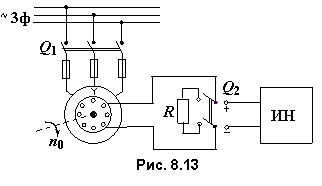
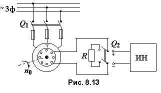

8.5.2. Пуск в ход синхронных двигателей
Для мощных СД предпринимают ряд мер по ограничению пусковых токов обмоток якоря и ЭДС в обмотке возбуждения. Обычно процесс пуска мощных СД автоматизирован и осуществляется по следующей схеме (рис. 8.13):


• при разомкнутой цепи якоря обмотка возбуждения ОВ отключается от источника постоянного напряжения и замыкается посредством переключателя Q2 на резистор R, сопротивление которого в 10…15 раз превышает сопротивление ОВ. Если обмотка возбуждения разомкнута, то в начале пуска в ней будет наводиться большая ЭДС, опасная для изоляции обмотки ротора и обслуживающего персонала;
• после подключения обмотки якоря к трехфазной сети под действием асинхронного электромагнитного момента ротор разгоняется до подсинхронной частоты вращения n2 ≈ 0.95n1
• обмотка возбуждения отключается от резистора R, подключается (посредством переключателя Q2) к источнику постоянного напряжения ИН и двигатель втягивается в синхронизм (частота ротора n2 = n1 = n0).
При идеальном холостом ходе (Мc = 0) ось результирующего магнитного поля Фр = Фя + Фв будет совпадать с осью ротора (угол между векторами Фя и Фв равен нулю, т.е. угол Θ = 0 (см. рис. 8.12б).
Если к валу двигателя приложить момент сопротивления (Мc > 0), то ось ротора и вектора магнитного потока Фв сместятся относительно оси вектора магнитного потока Фя на угол Θ в сторону отставания (см. рис. 8.12в).